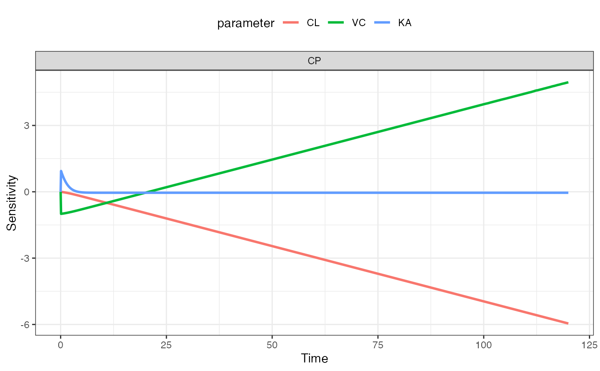

Perform local sensitivity analysis
lsa(mod, par, var, fun = .lsa_fun, eps = 1e-08, ...) lsa_plot(x, ...)
| mod | a mrgsolve model object |
|---|---|
| par | parameter names as character vector or comma-separated string |
| var | output names (compartment or capture) as character vector or comma-separated string |
| fun | generating simulated for sensitivity analysis (see details) |
| eps | parameter change value for sensitivity analysis |
| ... | passed to |
| x | output from |
A tibble with class lsa.
mod <- mrgsolve::house(delta=0.1) par <- "CL,VC,KA" var <- "CP" dose <- ev(amt = 100) fun <- function(mod, ...) mrgsolve::mrgsim_e(mod, dose, output="df") out <- lsa(mod, par, var, fun) head(out)#> # A tibble: 6 x 5 #> time dv_name dv_value p_name sens #> <dbl> <chr> <dbl> <chr> <dbl> #> 1 0 CP 0 CL 0 #> 2 0 CP 0 CL 0 #> 3 0.1 CP 0.564 CL -0.00254 #> 4 0.2 CP 1.06 CL -0.00519 #> 5 0.3 CP 1.50 CL -0.00793 #> 6 0.4 CP 1.89 CL -0.0108lsa_plot(out)